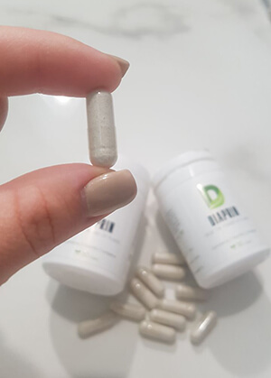
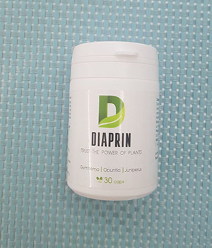

Sezonul SARS este în plină desfășurare, situația epidemiologică din lume nu este plăcută. Acum, mulți oameni rămân acasă din proprie voință, dar foarte curând o parte din populația țării noastre va fi forțată să fie închisă. Recent, au fost dezvăluite informații că diabeticii vor fi forțați să rămână acasă până la sfârșitul sezonului de probleme de sănătate cauzate de viruși și infecții. Produsele și lucrurile esențiale vor trebui să fie comandate online.
Planul de a verifica nivelul de zahăr de la toți cei care sunt înregistraţi la profesioniști în domeniul diabetului zaharat, și de a le pune restricții stricte
Atenție: persoanele care suferă de diabet zaharat sunt mai multe, decât oricine altcineva, sunt predispuşi la probleme de sănătate sezoniere. Ei ar trebui să fie mai atenți la propria lor sănătate și bunăstare. În plus, astăzi există un mijloc cu care se poate minimiza riscul de complicații și chiar de a preveni diabetul. Produsul profilactic eficient acum este disponibil cu o reducere de 50%!
Introducerea restricțiilor ca o necesitate
Asociația de cercetare privată a profesioniștilor din domeniul sănătății a obținut acces la informații că în curând vor fi introduse restricții serioase în țara noastră. O discuție activă a acestei probleme se desfășoară în spatele populației. Restricțiile se vor extinde numai pentru persoanele cu diabet zaharat. Faptul este că sunt mai predispuși la SARS decât alții. Orice boală cronică slăbește sistemul imunitar. Toate forțele corpului merg la lupta împotriva problemei de bază, barierele de protecție împotriva virușilor și bacteriilor scad.
Eșecul în activitatea imunității este o trăsătură caracteristică pentru ambele tipuri de diabet. Procesele și complicațiile virale negative pe fundalul lor sunt manifestări frecvente. Orice răni și tăieturi se vindecă greu și se infectează ușor, provocând supurații. Diabeticii au adesea infecții fungice care afectează pielea, unghiile, suprafețele mucoase.
În plus față de tulburările cronice cauzate de creșterea zahărului din sânge, următorii factori pot slăbi imunitatea:
- regimul zilnic incorect (somn inadecvat, adormire târzie);
- nutriție dezechilibrată;
- stres constant.
Există, de asemenea, riscul de complicații și alte diagnostice.
Virușii au devenit mai agresivi și mai periculoși pentru oameni, mai ales dacă au probleme cronice de sănătate
Cursul lung al diabetului zaharat contribuie la dezvoltarea unor modificări vasculare severe (angiopatie), care se manifestă prin deteriorarea vaselor retinei (retinopatie), rinichi (nefropatie), provoacă progresia aterosclerozei, crește riscul de dezvoltare a infarctului miocardic, accidentului cerebro-vascular, gangrenei extremităților inferioare.
Persoanelor cu diabet zaharat le este deja recomandat să rămână acasă și să renunțe la participarea la activități în masă!
Este necesar să se verifice în mod sistematic nivelul zahărului din sânge pentru a preveni complicațiile
Diabetul - este prietenul virușilor, bacteriilor, tulburărilor interne în organism
Odată cu creșterea zahărului din sânge în organism, se petrec schimbări adverse grave. Problema este că excesul de zahăr începe să se lipească literalmente de pereții vaselor de sânge, făcându-le mai rigide și mai puțin flexibile. De-a lungul timpului, aceasta duce la formarea țesutului cicatricial în vase - numeroase plăci care încalcă critic alimentarea cu sânge. Ca urmare, nivelurile ridicate de zahăr din sânge dăunează terminațiilor nervoase din talpă, ceea ce determină pierderea sensibilității.
Dacă mergeți mai departe și priviți în interior, puteți detecta alte leziuni patologice. Riscul de deces prematur crește cu 60%.
Puteți recunoaște creșterea zahărului după următoarele simptome:
- fluctuații bruște ale greutății;
- gură uscată;
- setea constantă și foamea;
- urinare frecventă;
- sindromul oboselii cronice;
- somnolență persistentă cu timp suficient de somn;
- răni și abraziuni care se vindecă încet;
- mirosul de acetonă în aerul expirat;
- aritmie;
- probleme de vedere;
- subțierea și căderea părului.
Ce se întâmplă cu imunitatea slăbită al diabeticilor? Se ia o poziție pasivă, toate încercările de a rezista microorganismelor dăunătoare sunt în zadar. În stare de rău, persoana nu simte primele simptome ale infecției virale, bacteriene şi răcelii. Prin urmare, este prea târziu să contactați un specialist și să începeți să luați capsule, tablete, sau altele. Imunitatea din cauza diabetului devine și mai slabă, nu există un răspuns protector sănătos, virusul continuă să atace corpul și să provoace daune colosale. Adesea, deteriorarea stării de sănătate se termină cu un rezultat fatal. Anume din acest motiv, ei vor să impună restricții diabeticilor. Scopul acestui eveniment este de a preveni mortalitatea în masă.
Specialiștii nu vor să facă rău, scopul lor este de a preveni mortalitatea în masă
Diabetul zaharat devine o problemă globală
Din păcate, numărul persoanelor cu niveluri ridicate de zahăr din sânge crește. În același timp, anterior de această încălcare sufereau doar persoanele în vârstă de pensionare, astăzi ea este diagnosticată la tineri și la vârsta de 40 de ani. Un rol important joacă rolul ereditar. Acum, fiecare a doua persoană din partea mamei sau a tatălui din familie are rude diagnosticate cu diabet zaharat.
Asociația privată de cercetare a profesioniștilor din domeniul sănătății a declarat că jumătate din populația țării noastre se află în zona de risc. Șansele de a fi închis are fiecare al doilea locuitor!
Riscurile de dezvoltare a diabetului zaharat de tip 1 și 2 sunt detaliate în tabel
Diabetul de tip 1
Diabetul de tip 2
Diabetul de tip 1
Numărul persoanelor la care se dezvoltă diabetul de tip 1 este în continuă creștere. Motivele pentru o astfel de creștere nu sunt încă pe deplin clare, dar acest lucru se poate lega cu înrăutăţirea ecologiei sau infecțiilor virale. Încălcarea apare la persoanele de orice vârstă, recent din ce în ce sunt diagnosticaţi copiii sau adolescenții.
Diabetul de tip 2
Cauzele exacte ale diabetului de tip 2 nu sunt încă pe deplin înțelese, dar sunt cunoscuți de mult următorii factori de risc:
- excesul de greutate corporală;
- lipsa activității fizice;
- modificări de vârstă;
- prediabet;
- alimentaţia slabă, inclusiv consumul ridicat de băuturi bogate în zahăr;
- ereditate;
- diabetul gestaţional în anamneză.
Numărul persoanelor cu diabet zaharat de tip 2 crește rapid în întreaga lume. Acest lucru se datorează în parte îmbătrânirii populației, dezvoltării economice rapide, creșterii procesului de urbanizare, ceea ce duce la o alimentație necorespunzătoare și la un stil de viață sedentar.
Cum să vă protejați împotriva virușilor la diabet și creșterea zahărului din sânge în general?
Specialiștii în diabet insistă asupra următoarelor: până la introducerea restricțiilor stricte, trebuie să aveți grijă de propria sănătate, în special, întărind sistemul imunitar. Acest lucru se poate face la domiciliu! A apărut un produs unic pentru diabetici și pentru cei care doresc să prevină creșterea zahărului din sânge. - este o formulă naturală revoluționară de înaltă eficiență. Produsul funcționează în două direcții: prevenirea creșterii zahărului din sânge și neutralizarea efectelor dăunătoare asupra imunității. Poate fi luat de oameni pentru prevenirea diabetului zaharat și de cei care au fost deja diagnosticați.
Diabeticilor le este greu de suportat răceala obișnuită, deci este mai bine să vă protejați de influențele externe negative
nu are analogi. În prezent, există doar compuși chimici care pot otrăvi corpul și pot produce un efect pozitiv imaginar. La baza lui - ingrediente naturale!
Ce este inclus în produs? El se bazează pe astfel de extracte naturale și vitamine:
- Gymnema sylvestre extract. Reduce procentul de zahăr din urină la pacienții cu diabet zaharat și crește nivelul de insulină din sânge. Normalizează nivelul lipidelor din sânge, prevenind astfel bolile sistemului cardiovascular, care sunt adesea o complicație la creșterea nivelului de glucoză din sânge. Gymnema are un efect benefic asupra sistemului digestiv. Microflora sănătoasă - este o imunitate bună;
- Opuntia vulgaris extract. Datorită conținutului de calciu și potasiu, ajută organismului să producă insulină și este utilizat în terapia diabetului zaharat. Ajută la reducerea formării grăsimilor și îmbunătățește excreția lor din organism. Fructele plantei conțin o cantitate mare de vitamina C, asigurând un efect general de întărire asupra corpului. Proteinele vegetale de opuntie elimină celulita și edemul, contribuie la eliminarea excesului de lichid;
- Pinus sylvestris extract. Are proprietăți calmante, vasodilatatoare, diuretice;
- Juniperus comunis extract. Se utilizează în caz de tulburări ale sistemelor urinare, digestive, pentru vindecarea rănilor și tăieturilor, pentru bolile pulmonare și pentru întărirea imunității;
- Vitamin E (pure). Este capabilă să prevină unele complicații ale diabetului (leziuni ale vaselor de sânge, inimii și ochilor). Poate reduce nevoia organismului de insulină. Întărește în mod natural imunitatea.
funcționează complex, afectează în mod eficient imunitatea, previne creșterea zahărului din sânge, îmbunătățește starea generală și bunăstarea. Riscul de răceală scade la jumătate! Este foarte important să luați cursuri de .
Din păcate, puțini oameni din țara noastră știu despre . Recent, despre el au aflat specialiștii organizației medicale private. Ei, de asemenea, erau îngrijoraţi de întrebarea: "De ce nu există remedii de diabet și imunitate redusă în farmacii?". Producătorul a explicat că companiile farmaceutice mari nu permit organizarea vânzărilor de produse în farmacii, deoarece pastilele lor chimice vor înceta să fie cumpărate. Acesta este adevărul absolut! Este bine că toată lumea poate comanda prin Internet.
ATENŢIE:
Acum pentru acţionează
PROMOŢIA - reducere 50%. Astfel, distribuitorul dă posibilitate ca numărul
maxim de persoane să poată utiliza produsul. Pentru a obține produsul la un
cost redus, trebuie să completați până la
(inclusiv) formularul de comandă de pe site-ul oficial - farmaciile au
refuzat să-l pună la vânzare din cauza costului scăzut. Feriți-vă de
falsuri - original poate fi achiziționat numai pe
site-ul oficial.
Ultimele comentarii

Mariana Otean
Vă imaginați cum se vor simți persoanele cu
diabet zaharat? Vor înnebuni! Nici măcar nu știu, dacă ar trebui să
impună astfel de restricții stricte. Familia mea are mulți diabetici. Le
voi comanda câteva cutii de remediu și, de asemenea, voi trece
cursul cu ei (am 43 de ani), până când nu am diabet, dar la
toate rudele a apărut peste 50 de ani. Sunt în pericol...

Adelina Răileanu
Îmi voi apăra drepturile în instanță,
dacă vor fi introduse aceste restricții! E o prostie invizibilă. Nu este
nevoie să-şi facă grijă de sănătatea mea, eu mă ocup de ea singură. Acum
spuneţi-mi, cine a laut ?

Răspuns de la Claudia Neagă pentru
Adelina Răileanu
Am comandat pentru mine și soțul meu. Zahărul s-a
stabilizat, sunt încântată! Și, apropo, nu mă deranjează să
stau acasă dacă îmi plătesc această vacanță neaşteptată.

Răspuns de la Bianca pentru Adelina
Răileanu
Totul va fi bine, sunt sigură. Dacă vor spune să
stăm acasă, vom sta! Așa trebuie să fie! Am luat ,
așa cum recomandă producătorul. Mă simt acum mai bine.

Rodica Popescu
La bunica mea iubită din cauza diabetului a
apărut gangrena, astăzi nu merge(. Nu vreau ca viața mea să se încheie
la fel, am început deja să iau acest produs, nu vreau să permit
dezvoltarea diabetului și complicațiile lui(((. Lasă toți să fie
sănătoși! Amin.

Eugenia Ciobanu
- este unul dintre cele mai
bune produse de diabet, potrivit specialistului meu. El spune acest
lucru, bazându-se pe rezultatele pacienților. E ciudat că nu e
în farmacii.


Teodor Ştefănescu
2 2020 05:54
Bunicile mele au avut diabet, făceau injecţii
în mod constant cu insulină și urmau diete. Au un stil de viață
înfiorător din cauza diabetului, persoana devine limitată. Am
comandat 3 cutii de pentru rudele mele. Lasă
părinții să fie sănătoși!

Albina Tomac
1 2020 18:13
Acum mă lupt cu diabetul, în timp el câștigă.
Sincer, m-am săturat... nu mai am putere. Dacă acest produs nu ușurează
starea, vor coborî mâinile. Foarte des mă îmbolnăvesc,
în mod constant curge nasul, uneori am tusă severă și temperatura
crește.

Răspuns de la Lucian pentru Albina
Tomac
1 2020 18:13
Nu disperați, luaţi un curs preventiv ,
totul se va îmbunătăți.

Răspuns de la Ursa pentru Albina
Tomac
1 2020 18:13
sunt absolut de acord cu dvs., și eu sunt
disperată și nu pot tolera starea de sănătate îngrozitoare cauzată
de diabet. Haideţi să încercăm acest produs, nu riscăm nimic. Am
luat deja câteva cutii de .

Zarema Ghioc
1 2020 18:13
Cât de mult doare sufletul pentru persoanele
cu tulburări cronice. Am o prietenă, e o femeie minunată. Ea a condus
întotdeauna un stil de viață sănătos, și acest lucru s-a întâmplat
cu ea - diabetul, și adăugător, hipertensiune arterială. Singurul lucru
pe care îl iubea era dulceața. O să-i arăt acest articol.

Ana Popa
1 2020 18:13
3 ani sufer de diabet zaharat ... O lună în
urmă au început să doară picioarele înfiorător, mai ales pe
vreme ((Este o astfel de complicație??

Răspuns de la Anton pentru Ana
Popa
1 2020 18:13
Ar fi mai bine să vă adresaţi la un specialist,
decât să aşteptaţi comentarii scrise. nu va
încurca precis…

Elena Aurescu
1 2020 18:13
Cine știe, există încă în stoc? Este
sigur de comandat ?

Amalia Ursache
1 2020 18:13
Cineva a încercat ???

Răspuns de la Lilia Dergaci pentru
Amalia Ursache
1 2020 18:13
am luat un curs de ,
nivelul de zahăr s-a normalizat. Sunt șocată! Un astfel de instrument
eficient şi ieftin și nimeni nu a vorbit despre el.

Andrian
1 2020 18:13
În tinerețe, eram cu toții sănătoși și
riscanți, beiam și umblam până dimineața, iar acum suferim de
consecințele tinereţii nebune. Diabetul zaharat este o boală teribilă, o
am de 4 ani. Urmăresc strict nutriția, multe lucruri nu-mi permit. Voi
comanda câteva cutii, poate va ajuta.

Aurel Tudoran
1 2020 18:13
Soția mea are diabet zaharat, se simte foarte rău
în ultima vreme, pierde în greutate și se plânge de
durere a piciorului. Sper să nu fie gangrena! Iau urgent !!!

Ioana Munteanu
1 2020 18:13
Există restricții de vârstă ???

Roman Stancu
1 2020 18:13
Cumpărați în timp ce există în vânzare.
Abia am găsit acest site, prietenului meu acest produs l-a ajutat foarte
mult!